Kevin W. Zhang
is currently
a 4th Year CS PhD Student at University of Maryland, College Park,
working with Christopher Metzler, and Jia-Bin Huang,
who applies computer vision and computer graphics techniques to computational imaging/sensing research,
interned at Adobe Research,
collaborated with Aaron Hertzmann, Jose Echevarria, and Stephen DiVerdi.
BA in Computer Science and Pure Mathematics (Double Major) at University of California, Berkeley,
collaborated with Michael Kellman, Jon Tamir, Laura Waller, and Michael Lustig.
Updates
2025-06
Acoustic Neural 3D Reconstruction Under Pose Drift accepted to IROS 2025. Congratulations to Tianxiang and Mohamad!
2025-06
Presented our work on MaDCoW at CVPR 2025.
2025-05
Started a research internship on Marc Levoy's computational imaging team at Adobe.
Publications (* indicates equal contribution)
Select Publications
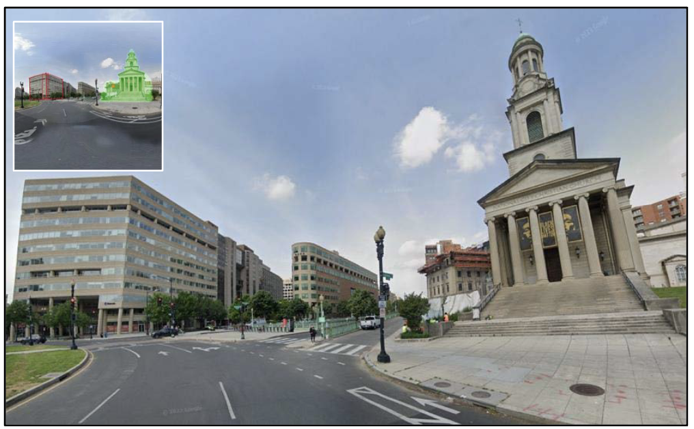
MaDCoW: Marginal Distortion Correction for Wide-Angle Photography with Arbitrary Objects
Kevin Zhang, Jia-Bin Huang, Jose Echevarria, Stephen DiVerdi, Aaron Hertzmann
CVPR 2025
[Paper]
Kevin Zhang, Jia-Bin Huang, Jose Echevarria, Stephen DiVerdi, Aaron Hertzmann
CVPR 2025
[Paper]
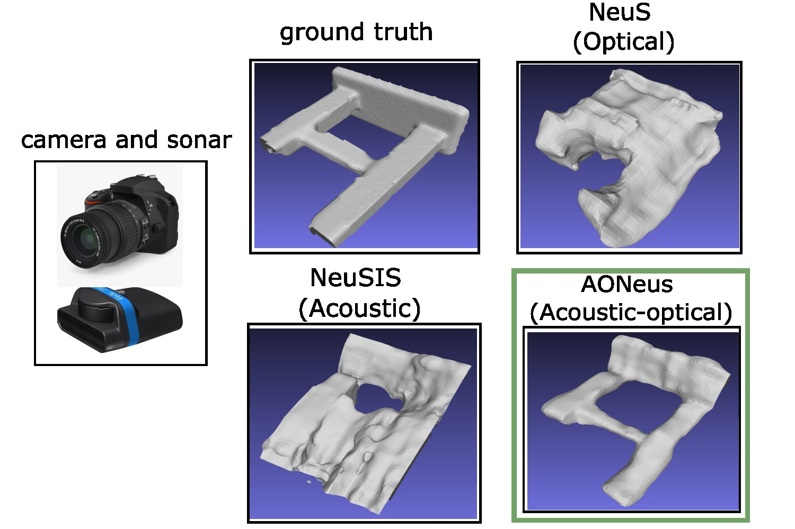
AONeuS: A Neural Rendering Framework for Acoustic-Optical Sensor Fusion
Kevin Zhang*, Mohamad Qadri*, Akshay Hinduja, Michael Kaess, Adithya Pediredla, Christopher Metzler
SIGGRAPH 2024 (conference track full paper)
[Paper] [Website]
Kevin Zhang*, Mohamad Qadri*, Akshay Hinduja, Michael Kaess, Adithya Pediredla, Christopher Metzler
SIGGRAPH 2024 (conference track full paper)
[Paper] [Website]
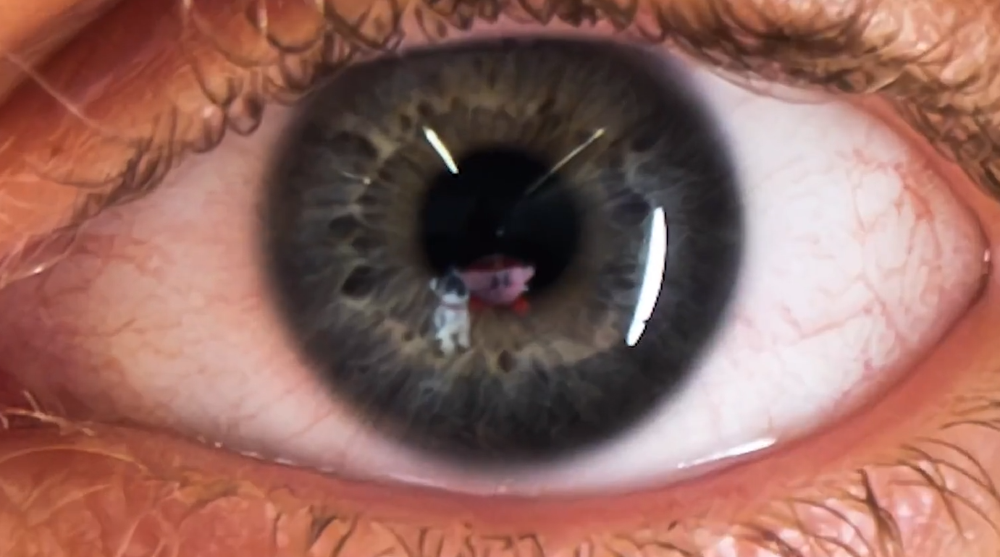
Seeing the World through Your Eyes
Kevin Zhang*, Hadi AlZayer*, Brandon Feng, Christopher Metzler, Jia-bin Huang
CVPR 2024 (Oral, 3.3% of accepted papers)
[Paper] [Website] [Press] [Twitter]
Kevin Zhang*, Hadi AlZayer*, Brandon Feng, Christopher Metzler, Jia-bin Huang
CVPR 2024 (Oral, 3.3% of accepted papers)
[Paper] [Website] [Press] [Twitter]
Additional Publications
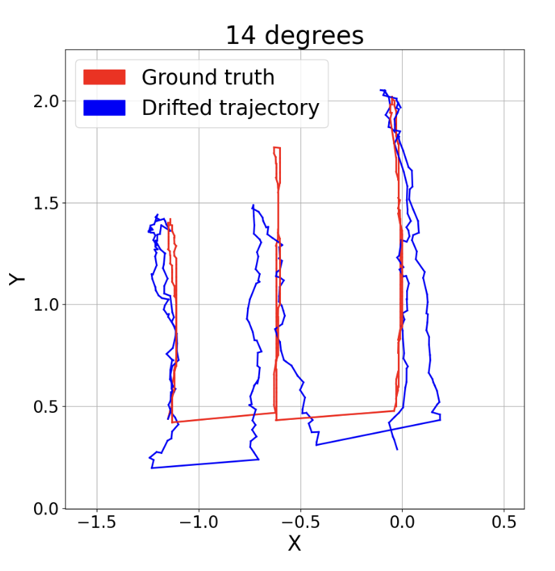
Acoustic Neural 3D Reconstruction Under Pose Drift
Tianxiang Lin*, Mohamad Qadri*, Kevin Zhang, Adithya Pediredla, Christopher Metzler, Michael Kaess
IROS 2025
[Paper]
Tianxiang Lin*, Mohamad Qadri*, Kevin Zhang, Adithya Pediredla, Christopher Metzler, Michael Kaess
IROS 2025
[Paper]
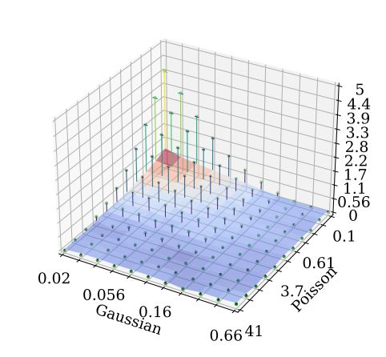
A Scalable Training Strategy for Blind Multi-Distribution Noise Removal
Kevin Zhang, Sakshum Kulshrestha, Christopher Metzler
IEEE TIP 2024
[Paper]
Kevin Zhang, Sakshum Kulshrestha, Christopher Metzler
IEEE TIP 2024
[Paper]
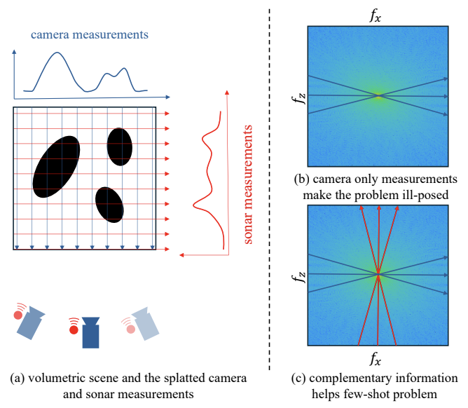
Z-Splat: Z-Axis Gaussian Splatting for Camera-Sonar Fusion
Ziyuan Qu, Omkar Vengurlekar, Mohamad Qadri, Kevin Zhang, Michael Kaess, Christopher Metzler, Suren Jayasuriya, Adithya Pediredla
IEEE TPAMI 2024
[Paper]
Ziyuan Qu, Omkar Vengurlekar, Mohamad Qadri, Kevin Zhang, Michael Kaess, Christopher Metzler, Suren Jayasuriya, Adithya Pediredla
IEEE TPAMI 2024
[Paper]
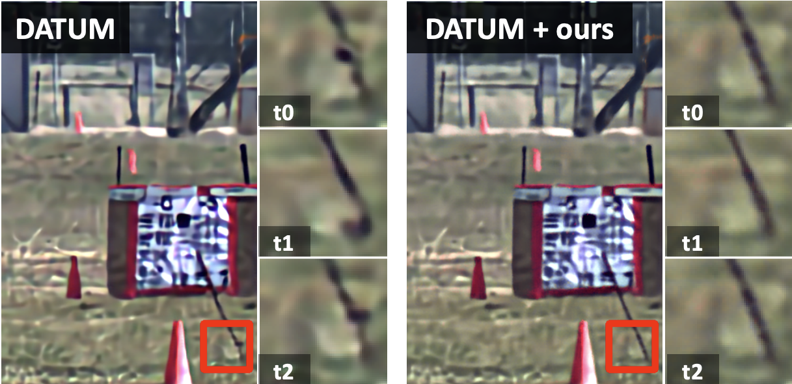
Temporally Consistent Atmospheric Turbulence Mitigation with Neural Representations
Haoming Cai*, Jingxi Chen*, Brandon Y. Feng, Weiyun Jiang, Mingyang Xie, Kevin Zhang, Cornelia Fermuller, Yiannis Aloimonos, Ashok Veeraraghavan, Christopher Metzler
NeurIPS 2024
[Paper] [Website]
Haoming Cai*, Jingxi Chen*, Brandon Y. Feng, Weiyun Jiang, Mingyang Xie, Kevin Zhang, Cornelia Fermuller, Yiannis Aloimonos, Ashok Veeraraghavan, Christopher Metzler
NeurIPS 2024
[Paper] [Website]
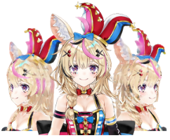
PAniC-3D: Stylized Single-view 3D Reconstruction from Portraits of Anime Characters
Shuhong Chen, Kevin Zhang, Yichun Shi, Heng Wang, Yiheng Zhu, Guoxian Song, Sizhe An, Janus Þór Kristjánsson, Xiao Yang, Matthias Zwicker
CVPR 2023
[Paper] [Code]
Shuhong Chen, Kevin Zhang, Yichun Shi, Heng Wang, Yiheng Zhu, Guoxian Song, Sizhe An, Janus Þór Kristjánsson, Xiao Yang, Matthias Zwicker
CVPR 2023
[Paper] [Code]
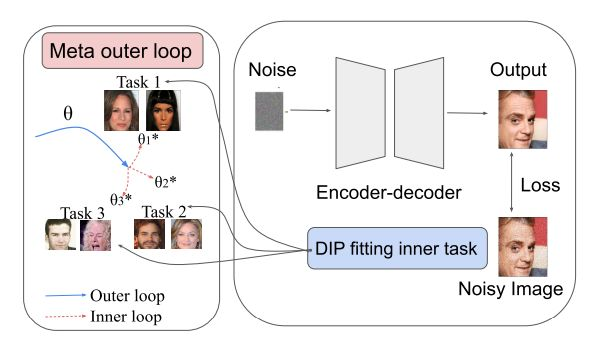
MetaDIP: Accelerating Deep Image Prior with Meta Learning
Kevin Zhang, Mingyang Xie, Maharshi Gor, Yi-Ting Chen, Yvonne Zhou, Christopher Metzler
arXiv, 2022
[Paper]
Kevin Zhang, Mingyang Xie, Maharshi Gor, Yi-Ting Chen, Yvonne Zhou, Christopher Metzler
arXiv, 2022
[Paper]
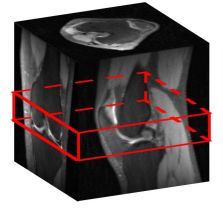
Memory-efficient Learning for High-Dimensional MRI Reconstruction
Ke Wang, Christopher Sandino, Michael Kellman, Kevin Zhang, Shreyas Vasanawala, Jonathan I. Tamir, Stella Yu, Michael Lustig
MICCAI 2021
[Paper] [Code]
Ke Wang, Christopher Sandino, Michael Kellman, Kevin Zhang, Shreyas Vasanawala, Jonathan I. Tamir, Stella Yu, Michael Lustig
MICCAI 2021
[Paper] [Code]
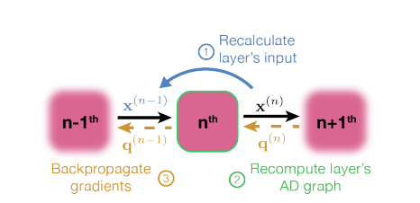
Memory-efficient Learning for Large-scale Computational Imaging
Michael Kellman, Kevin Zhang, Eric Markley, Jonathan I. Tamir, Emrah Bostan, Michael Lustig, Laura Waller
IEEE TCI 2020
[Paper] [Code]
Michael Kellman, Kevin Zhang, Eric Markley, Jonathan I. Tamir, Emrah Bostan, Michael Lustig, Laura Waller
IEEE TCI 2020
[Paper] [Code]
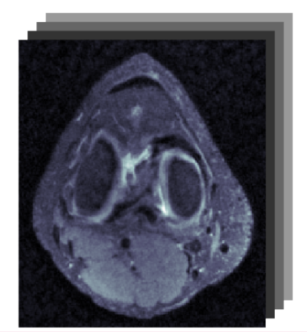
Memory-Efficient Learning for Unrolled 3D MRI Reconstructions
Kevin Zhang*, Michael Kellman*, Jonathan I. Tamir, Michael Lustig, Laura Waller
ISMRM Workshop on Data Sampling and Reconstruction, 2020
[Paper] [Video]
Kevin Zhang*, Michael Kellman*, Jonathan I. Tamir, Michael Lustig, Laura Waller
ISMRM Workshop on Data Sampling and Reconstruction, 2020
[Paper] [Video]
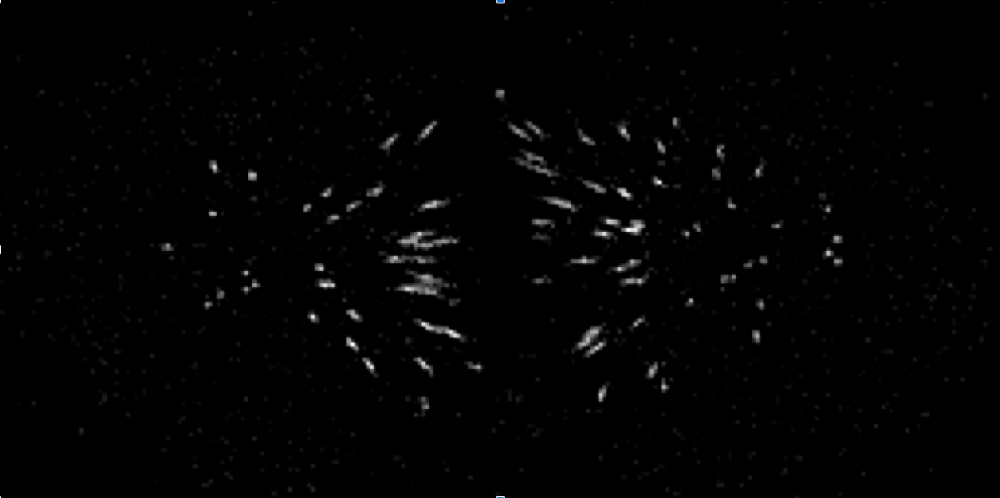
3D fluorescence deconvolution with deep priors
Kevin Zhang, Michael Kellman, Emrah Bostan, Laura Waller
SPIE BiOS 2020
[Paper]
Kevin Zhang, Michael Kellman, Emrah Bostan, Laura Waller
SPIE BiOS 2020
[Paper]
Articles
Integer Partition Generating Function Forms
2024-05-21-tues
Motivated by a question from a friend about a statement from a book on number theory.
[View Article]
2024-05-21-tues
Motivated by a question from a friend about a statement from a book on number theory.
[View Article]
On an Integral from Griffith's Problem 2.7
2024-03-06-wed
A fun problem from Griffith's book on electrodynamics.
[View Article]
2024-03-06-wed
A fun problem from Griffith's book on electrodynamics.
[View Article]
Side Projects
I also enjoy building small web apps to visualize algorithmic ideas. The source code for these projects is on my Github.


Site design inspired by Haozhi Qi orderedlist.